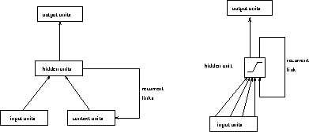

Recurrent Cascade-Correlation (RCC) is a recurrent version of Cascade-Correlation and can be used to train recurrent neural nets ([Elm90]).
Recurrent nets have some features that distinguish them from normal
neural networks. For example they can be used to represent time
implicitly rather than explicitly. One of
the most commonly known architectures of recurrent neural nets is the
Elman model, which assumes that the network operates in discrete
time steps. The outputs of the network's hidden units at a time t are
fed back for use as additional network inputs at time t+1. To store
the output of the hidden units Elman introduced context units,
which represent a kind of short-term memory (see fig.  ). To integrate the Elman model into the cascade architecture some
changes are necessary: The hidden units' values are no longer fed
back to all other hidden units. Instead every hidden unit has only one
self recurrent link as shown in figure
). To integrate the Elman model into the cascade architecture some
changes are necessary: The hidden units' values are no longer fed
back to all other hidden units. Instead every hidden unit has only one
self recurrent link as shown in figure  . This self
recurrent link is trained along with the candidate unit's other input
weights to maximize the correlation. When the candidate unit is added
to the active network as hidden unit, the recurrent link is frozen
along with all other links.
. This self
recurrent link is trained along with the candidate unit's other input
weights to maximize the correlation. When the candidate unit is added
to the active network as hidden unit, the recurrent link is frozen
along with all other links.

Figure: The Elman architecture of a recurrent neural net